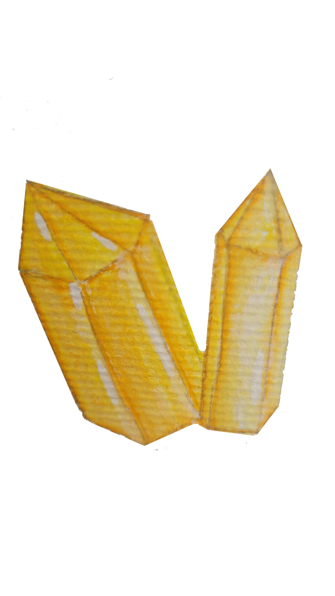
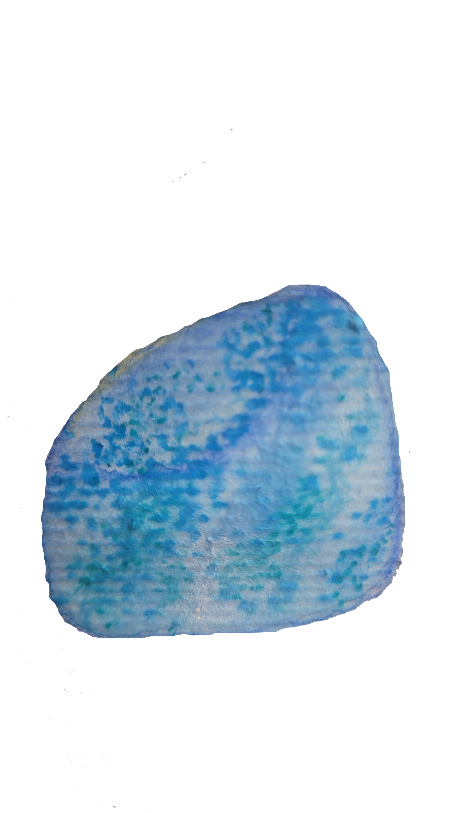
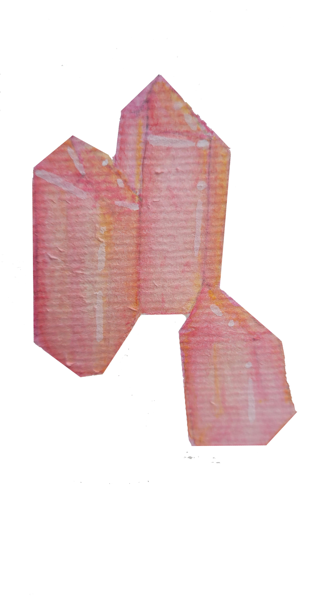
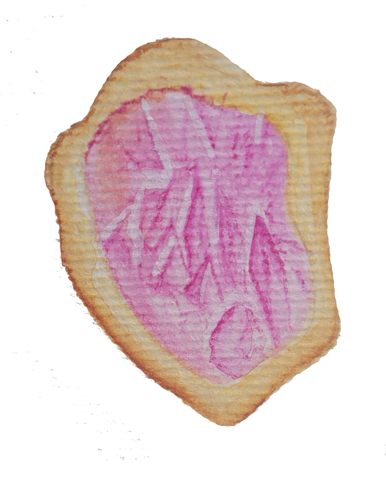

Diversas tradiçoes e culturas, observavam as pedras como sinal de poder e proteção. Acredita-se que cada pedra diversa vai posuir um siguinificado variado, de acordo com suas cores e propriedades. Possui uma associação entre as pedras e os siguinos do sodiaco, do qual cada pedra se relaciona com a personalidade e cacteristicas pessoais.

Áries - Granada, Rodocrosita, Ametista, Hematita, Pirita. Geralmente relacionados a pedras vermelhas.
Leão - Citrino, Quartzo Rutilado, Kunzita.
Peixes - Água-marinha, Turquesa, Ametrino, Esmeralda, Fluorita.

Touro - Jaspe, Quartzo fumê, Ágata, Quartzo verde Malaquita, Quartzo Rosa. Pedras geralmente verdes.
Virgem - Ametista, Crisoprásio, Lápis-Lazúli.
Aquário - Amazonita, Fluorita, Água-Marinha, Unaxita.

Gêmeos - Olho de tigre, Cornalina, Água-marinha, Apatita, Quartzo rosa.
Escorpião - Hematita, Olho de falcão, Ametrino, Malaquita, Turmalina.
Leão - Citrino, Quartzo rutilado, kunzita.

Cancer - Quartzo verde, Pedra da lua, Esmeralda, Howlita, Labradorita, Magnetita.
Capricórnio - Ônix, Ágata, Musgo, Ametista, Crisoprásio, Malaquita.
Sagitário - Sodalita, Calcedônia, Ametista, Lápis-Lazúli, Ônix, Topázio azul.
